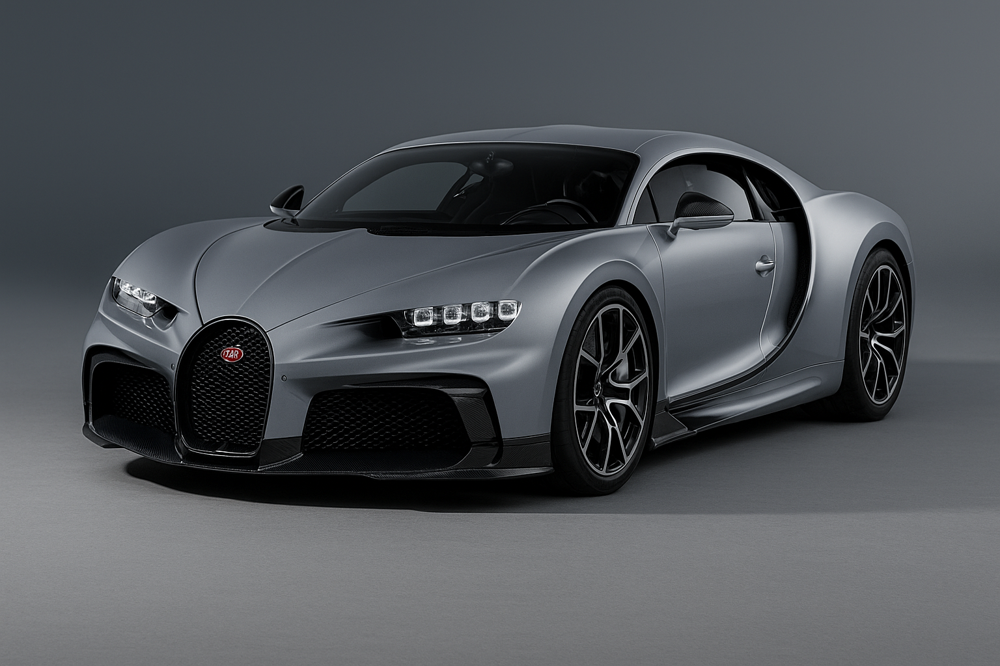

Bugatti Chiron
Datos interesantes
El Bugatti Chiron Super Sport alcanza más de 490 km/h. Su motor W16 quad-turbo produce 1,600 caballos de fuerza. Es uno de los autos más exclusivos del mundo.
Características
- Motor W16 Quad-Turbo
- Velocidad máxima +490 km/h
- 0-100 km/h en 2.4s
- Diseño aerodinámico avanzado
Logros
- Récord no oficial de velocidad
- Solo 30 unidades producidas
- Diseño de lujo personalizable
- Ingeniería extrema